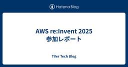
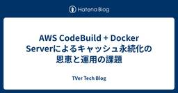
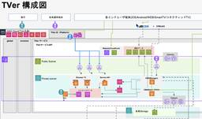
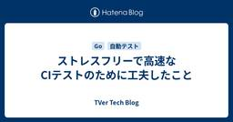

TVer Tech Blog
https://techblog.tver.co.jp/
TVer Tech Blog
フィード

AWS re:Invent 2025 参加レポート 1
1
TVer Tech Blog
この記事は TVer Advent Calendar 2025 12日目の記事です。 こんにちは。TVerでバックエンドエンジニアをしている横尾です。 先日、ラスベガスで開催された世界最大級のカンファレンス AWS re:Invent 2025 に参加する機会をいただきました。 現地では「AI Agent」というキーワードが至る所で飛び交っており、開発者体験そのものが大きく変わろうとしている熱気を肌で感じました。 今回の記事では、現地のリアルな体験談とともに、バックエンドエンジニアの視点で感じた「AIエージェント元年」の実態と、TVerの開発に活かせる具体的な知見をご紹介します。 1. re:…
1日前

AWS CodeBuild + Docker Serverによるキャッシュ永続化の恩恵と運用の課題
TVer Tech Blog
この記事は TVer Advent Calendar 2025 5日目の記事です。 はじめに こんにちは。TVerでDevOpsを担当している鈴木です。 TVerのバックエンドではECSを活用しており、アプリケーションの変更にはコンテナイメージのビルドが必須です。 開発組織の拡大に伴い、1日のビルド回数が増加したことで、デプロイ待ち時間が無視できない課題となってきました。 今回は、ビルド時間を短縮するためにCodeBuildの「Docker Server」機能によるキャッシュ永続化を試みた事例を紹介します。 結果としてビルド時間を約50%ほど高速化しましたが、運用上の課題により採用を見送った経…
3日前

TVerインフラアーキテクチャの現在地(2025年)
TVer Tech Blog
TVerインフラアーキテクチャの現在地 TVerのクラウドインフラチームでインフラ周りを担当しています西尾です。 前回までは直近で行っていた施策をご紹介していましたが、今回はもっと根本的なTVerの動画配信のインフラについてどうしようとしているかについて書いていければと思っています。 現在のTVerインフラアーキテクチャについて 現在の動画配信については今までに何度かその構成について触れましたが、主にAWS上でALB・ECSを主軸としたサービスを利用して稼働しています。 この構成についてはこれから移行する次世代構成との説明をわかりやすく区別するために、ここからはTVerアーキ1.0と仮称します…
3日前

ストレスフリーで高速なCIテストのために工夫したこと
TVer Tech Blog
この記事はTVer Advent Calendar 2025 10日目の記事です。9日目の記事はta9tさんの「toC×エンタメPMとして「欲しい」を理解し続ける」でした。 はじめに こんにちは、Backend Enabling Teamの伊藤(@sou_world) です。 TVerのバックエンドはGoで書かれておりGitHubのPRを利用して開発をしています。PRはコードレビューだけでなくテストやlint、labelチェックなどの様々なCIを通すことで初めてマージできます。 ここ1年の開発チームの拡大と開発速度の上昇に伴い、CI実行時間が徐々に増加し開発体験に影響が出始めてきました。なかで…
4日前
TVer本社お引越ししました。詳細はこちら。
TVer Tech Blog
この記事は TVer Advent Calendar 2025 8日目の記事です。 Index この記事について 新社屋はどこに ワークスペース MTGブースやフリースペース TVerの社食 カフェラウンジ おわりに この記事について みなさんこんにちは、 今回は仕事の話ではなく 2025年12月にお引越しをした、TVerの本社についてです。 オフィスの労働環境が気になる方には良い記事になるのではないかと思います。 新社屋はどこに 我々の新社屋は現在 "赤坂" です。 最寄り駅は溜池山王または国会議事堂前、歩いてすぐの場所にあります。 詳しくはTVerの企業HPに載っているはずです。 ワークス…
6日前
カオスなPython環境を5分で診断・整理してくれたClaude Codeとuv移行のすすめ 1
TVer Tech Blog
この記事はTVer Advent Calendar 2025 6日目の記事です。 こんにちは。TVerで広告周りのデータサイエンティストをしている土田です。 TVerでは全エンジニアがClaude Codeを利用できるようになっており、私も日々の業務で活用しています。 先日、「負の二項分布でストリーミング広告のリーチを予測してみた - 書籍の理論が通用しなかった原因とその解決」という記事を執筆する際に、ローカルでのデータ分析環境をゼロから構築し直す機会がありました。その過程で、Claude Codeのディレクションに従いながら、uvというモダンなPythonパッケージマネージャーを活用したとこ…
8日前

フロントエンドと外部システムの連携をどう自動テストするか？
TVer Tech Blog
この記事はTVer Advent Calendar 2025 1日目の記事です。 どうも、TVerでエンジニアリングマネージャーをしている@ukitakaです！ みんな締め切りにビビっているのか1日目の枠がずっと空いてたので、去年に引き続き今年もアドベントカレンダーのトップバッターをやることにしました。 今回はTVerで今年から本格的に進めているテスト自動化の取り組みにおいて、どんな課題が発生し、どう乗り越えようとしているのかについてお話しします。 まだ成し遂げていないことも多く含まれますが、「こんなことをやっていこうと思っている」という野望の話だと思って読んでいただければ幸いです。 TVer…
13日前
番組との「良質な出会い」をつくるために――”新人ばかり”のショート動画機能開発チームが語る、リリースの裏側とこれから
TVer Tech Blog
10/24、TVerの10周年に合わせ、ショート動画機能という新機能がリリースされました。 prtimes.jp tver.jp ショート動画機能のリリースは、TVerにとって大きな挑戦でした。 単なる機能追加ではなく、若年層を中心とした「非目的視聴」のユーザーに、テレビの良質なコンテンツとの新しい出会いをつくるという大きな使命を背負い、これまでに無かった新しい体験を産み出さなければいけなかったからです。 しかも、当時は開発組織内製化の真っ只中だった中で、このショート動画機能の開発に携わったメンバーのほとんどが入社したての新入社員でした。そんな中でどのように開発をしていったのか？どんな風にチー…
16日前
負の二項分布でストリーミング広告のリーチを予測してみた - 書籍の理論が通用しなかった原因とその解決
TVer Tech Blog
こんにちは。TVerで広告周りのデータサイエンティストをしている土田です。 テレビCMやストリーミング広告の効果を予測する際、「グロスリーチ（延べ接触人数）」と「ユニークリーチ（実接触人数）」の関係を理解することは非常に重要です。今回は、書籍「ビジネス課題を解決する技術 〜 数理モデルの力を引き出す3ステップフレームワーク」で紹介されている負の二項分布モデルによるリーチカーブ予測を実際のTVer広告データに適用してうまくいかなかった話と、理論通りにいかなかった原因を突き止め、劇的な改善に至った経緯をご紹介します。 背景：リーチカーブとは？ 広告配信において、「何人のユーザーに広告を届けられるか…
24日前
TVer開発組織が🔥決起会🔥でめちゃくちゃ決起した話
TVer Tech Blog
こんにちは！TVerのサービスプロダクト本部プロダクト推進部部長の松岡(@y_a_j_i)です！ 去る10月2日、TVerサービスの開発を担っている開発組織（サービスプロダクト本部）で下期に向けて決起会を開催し、参加者の皆さんからめちゃくちゃ決起したとご高評を頂いたので、是非その空気感を少しでも感じ取って頂けたらと思い、記事に残すことにしました！ 決起会実施の背景 25年度上期は、重要な変化が多発したTVer開発組織にとっての特異点的な時期でした。 TVerの開発組織が急拡大 長年の悲願だった固定スクワッドチーム体制への変更が本運用開始（以前はアドホックにプロジェクトチームを組んでいた） 事業…
1ヶ月前
品質と開発効率を向上へ！ Androidアプリのリアーキテクチャによる負債脱却
TVer Tech Blog
こんにちは。TVerでAndroidエンジニアをしている石井です。 TVerサービス並びにTVerのAndroidアプリは、2015年にリリースされ今年でちょうど10周年を迎えます。 10年前ともなるとCoroutinesはもちろんViewModelなどの今のAndroid開発の土台と言えるものも当時はなく、Activity, Fragmentに直接APIを実行するコードがあったりするのが普通だった時代だと思います。 TVerにもそのような実装があり技術的負債が溜まっていく中で、今後質の高いアプリケーションを提供していくためにリアーキテクチャに着手しました。 本記事では、その中で実施したリアー…
1ヶ月前
iOSDC Japan 2025に参加しました！
TVer Tech Blog
こんにちは、TVerでiOSエンジニアを担当している福島(@mantaroufire)です。先日開催されたiOSDC Japan 2025に参加してきました！ 今回、私たちはゴールドスポンサーとして企業ブースを出展し、2名のエンジニアが登壇しました。この記事では、当日の様子をご紹介したいと思います。 iOSDC Japan とは？ iOSDC Japan は、iOS関連技術を中心としたソフトウェア技術者のためのカンファレンスです。 日本最大級のiOSカンファレンスとして、毎年多くのエンジニアが参加し、最新の技術動向や実践的なノウハウを共有する場となっています。 2025年は9月19日（金）から…
2ヶ月前
配信サービス(24時間稼働)の無停止メンテナンスついて取り組む
TVer Tech Blog
DB起因のメンテナンスに対する取り組み TVerのSREチームでインフラ周りを担当しています西尾です。 前回に続き、今回はWEBサービスを運用する者にとって避けられない永遠の課題であるメンテナンスについて書いていこうかと思います。 メンテナンス時間について WEBでサービスを提供するにあたって、その構成されるアーキテクチャーがオンプレやクラウドに限らずハードウェアに起因するもの、セキュリティ的な問題に対処するものなどにより、どうしてもその対応でサービスを止める必要がある場面に出くわす事があります。 無論オンプレより利用するクラウドサービスによってはあるサービスはフルマネージドにより利用者が意識…
2ヶ月前
DroidKaigi 2025 参加レポート
TVer Tech Blog
はじめに こんにちは、TVerのAndroidアプリエンジニアの根岸です。 TVerは今年、DroidKaigi 2025にゴールドスポンサーとして協賛させていただきました。今回はTVerブースでの取り組みやTVerのエンジニアが聴講し印象に残ったセッションを紹介します。 techblog.tver.co.jp DroidKaigiについて DroidKaigiはエンジニアが主役のAndroidカンファレンスです。Android技術情報の共有とコミュニケーションを目的に、2025年9月10日(水)〜12日(金)の3日間、ベルサール渋谷ガーデンで開催されました。 TVerブースでの取り組み 今回…
2ヶ月前
Choosing NLB Use Cases and Real-Life TVer
TVer Tech Blog
増え続けるアクセスによる選択 TVerのSREチームでインフラ周りを担当しています西尾です。 前回は現状のTVerサービスの提供環境に関して取り上げましたが、今回は直近にありましたインフラ構成変更について書いていきたいと思います。 TVerの動画配信に関しましてはありがたいことに着実にユーザー数が増えて、皆様に身近なサービスとして認知がされていってるのではないかと思っております。 その上でサービスに関するトラフィックも増え続けることにより、この増加に起因する問題に対して改めて取り組む必要が出てきました。 現在の構成 現在のサービス構成に関しましては、AWS上で動いていましてそのリクエストを捌く…
2ヶ月前
TVerはiOSDC Japan 2025にゴールドスポンサーとして協賛します！
TVer Tech Blog
こんにちは、TVerでiOS/Android領域のエンジニアリングマネージャーをしている黒田です。 TVerは今年、iOSDC Japan 2025にゴールドスポンサーとして協賛させていただくことになりました！ iOSDC Japanとは iOSDC Japan 2025はiOS関連技術をコアのテーマとした、ソフトウェア技術者のためのカンファレンスです。2025年は9月19日(金)〜21日(日)の3日間、有明セントラルタワーホール＆カンファレンスで開催されます。 国内外のiOSエンジニアが集まり、最新の技術トレンドや開発ノウハウ、実践的な知見を共有する場として、毎年多くの参加者で賑わっています…
3ヶ月前
TVerはDroidKaigi 2025にゴールドスポンサーとして協賛します！
TVer Tech Blog
こんにちは、TVerでiOS/Android領域のエンジニアリングマネージャーをしている黒田です。 TVerは今年、DroidKaigi 2025にゴールドスポンサーとして協賛させていただくことになりました！ DroidKaigiとは DroidKaigiはエンジニアが主役のAndroidカンファレンスです。Android技術情報の共有とコミュニケーションを目的に2025年9月10日(水)〜12日(金)の3日間、ベルサール渋谷ガーデンで開催されます。 国内外のAndroidエンジニアが集まり、最新の技術トレンドや開発ノウハウ、実践的な知見を共有する場として、毎年多くの参加者で賑わっています。J…
3ヶ月前
OpenAPIを使ったTVer APIのスキーマ駆動開発
TVer Tech Blog
こんにちは。 id:takanamito です。 以前書いた記事「TVerバックエンドAPIのリアーキテクチャ」では、TVerのAPIアーキテクチャを移行した背景と全体設計について紹介しました。 本記事では、アーキテクチャから1段ブレークダウンして、OpenAPIによるスキーマ駆動開発の実践について現場レベルの具体的な運用の話を書きます。 TVerにはcontents-api, user-api, manager-apiという3種のAPIが存在します。それぞれの詳細は前回の記事でご確認ください。 この記事ではcontents-apiを例に紹介を進めます。 OpenAPIを使った開発フロー なぜ…
3ヶ月前
Google Cloud Next Tokyo '25 に登壇しました
TVer Tech Blog
はじめに TVer 広告プロダクト本部の髙品です。8月5日と6日に東京ビッグサイト南展示場で開催された Google Cloud Next Tokyo '25 に登壇させていただきました。セッションタイトルは『月間動画再生数約 5 億回を誇る TVer の、広告配信基盤における Memorystore & Bigtable 併用戦略と実践的チューニング』です。 Google Cloud Next Tokyo '25 イベントウェブサイトに掲載されたセッション概要 この記事では、登壇の振り返りと、セッション内容の簡単な紹介を書こうと思います。後日、セッションのアーカイブと資料が Google C…
4ヶ月前
PR単位の開発環境構築自動化によるWEBフロントエンド開発の生産性向上
TVer Tech Blog
みなさん、こんにちは！TVer SREチーム DevOps Unitの鈴木です！ TVerでは採用に非常に力を入れており、おかげさまで社員数が右肩上がりに増え続けています。 note.com TVerでは、WEB、iOS/Androidアプリ、Fire TV Stickなどといった多様な端末でサービスを提供しており、それぞれに専門の開発チームが存在しています。 組織拡大に伴い、それぞれのチームで複数の新規機能開発や改善プロジェクトが同時に推進されるようになりました。 しかしながら、この急速な組織拡大に伴い開発環境の不足がボトルネックとなり、開発生産性向上を阻むという課題が浮き彫りになりました。…
4ヶ月前
TVerにおける生成AI活用の現在地 - Claude MAX導入から活用事例まで
TVer Tech Blog
TVerの開発組織で本部長をしている脇阪(@tohaechan)です。 先日、GENDA Tech Talk#1 で登壇する機会をいただきました。 今回はその内容を振り返りながら、TVerでの生成AI活用の取り組みについてお伝えします。 登壇資料 当日の登壇資料はこちら speakerdeck.com きっかけは開発合宿 TVer社内では3月ごろから、Devin、Claude Teamプラン、Cursorなどを導入していました。 バックエンドの開発にDevinを試し、アプリ開発周りでClaudeを使い、ドキュメント整備周りでCursorを使い…、というような試験的な取り組みです。 ただし組織の…
4ヶ月前
TVerのエンジニアで湯河原へ開発合宿に行きました！
TVer Tech Blog
おはようございます。こんにちは。こんばんは。 TVerでiOSエンジニアの遠藤(entaku)です。 6/19,20でTVerのサービスプロダクト本部内のエンジニアで湯河原へ開発合宿へ行ってきました。 今回は湯河原駅からバスで10分ほどのところにある、【公式】ニューウェルシティ湯河原 を利用させていただきました。 当日までの流れ 今回の開発合宿のテーマは「AI」。 会社で利用している、Gemini や Claude Codeなどを利用して、業務効率化やTVerへの新企画を導入してみよう！というものでした。 チーム分けは事前にアンケートを取り、「一人で開発したい」、「複数人で開発したい」、「どち…
5ヶ月前
TVer WebのUI構築
TVer Tech Blog
TVerのWebフロントエンドエンジニアのJeun Yun (Paul) Tsangです。2024年から始まったWebフロントエンド開発の内製化によって改善した、 tver.jp のUI構築の考え方を紹介します。 tver.jpの技術スタック 以下は改善後のフロントエンド技術スタックです。 Next.js（クライアントサイドレンダリングのみ） CSS ModulesとSassでスタイルの定義 StorybookとChromaticでコンポーネントの検証 Radix PrimitivesのUIライブラリーで汎用コンポーネントの構築 Biomeのコードフォーマッターとリンター 内製化で見えてきた課…
5ヶ月前
TVerバックエンド開発におけるAIツールの導入の今〜2025年Q1編〜
TVer Tech Blog
みなさん、こんにちは。TVer サービスプロダクト本部バックエンドEMの和田(@tench_oo)です。 いきなりですが、世の中AIが著しく成長していっていますよね。 取り残されないようにしないといけないと思い情報収集するのも大変なほど、日々新しい刺激が待っているのが今のAIの状況な気がしています。 そんな環境で、バックエンド部でもAI開発ツールの導入を進めていて実際に活用しており、その取組を一部ご紹介していきたいと思います。 (TVerもちゃんとAIを活用しはじめているんだよ。というアピールです。) バックエンド部が活用するAIツール 現在バックエンド部では、いくつかのAI開発ツールの導入検…
5ヶ月前
Google Cloud Next '25に参加しました
TVer Tech Blog
はじめに こんにちは。広告プロダクト本部の髙品です。私は、TVer広告の配信システムおよび広告周辺領域のシステム開発・保守を担うチームのSREです。先月、4月9日から4月11日の3日間にLas VegasのMandalay Bay Convention Centerにて開催されたGoogle Cloud Next '25に参加しました。TVer社としては3年連続の参加で、今回は2名が参加しました。すでに開催から1ヶ月以上が経過し、Google Cloud がGoogle Cloud Next '25 で行われた 229 の発表のまとめというブログ記事をポストしているため、新機能やアップデートの…
7ヶ月前
Androidエンジニアとして入社した最初の数ヶ月
TVer Tech Blog
こんにちは。TVerでAndroidエンジニアをしている西田です。2025年1月に入社し、早くも数ヶ月が経ちました。 今回は、入社後のオンボーディングを通して感じたことや取り組んだことについて紹介したいと思います。 バックエンド側のオンボーディングの取り組みについての記事もあるのでそちらもぜひ合わせて御覧下さい。 techblog.tver.co.jp オンボーディング中 入社初日は、まずTVer社内全体でのオンボーディングがありました。そちらは入社時期が一緒のメンバーとオフィスの会議室に集まって、社用携帯とPCのセットアップ、セキュリティ講座や、TVerの社内制度や事業について説明を受けまし…
7ヶ月前
NAB Show 2025 参加レポート
TVer Tech Blog
はじめに こんにちは。広告プロダクト担当の 大野です。 2025年4月6日から9日にかけて、米国ラスベガスで開催されたNAB Show 2025に、TVerからは今回3名で参加しました。 NAB Showは、毎年ラスベガスで開催される世界最大級の放送・映像・メディア業界向け展示会・カンファレンスです。世界中の企業が最新技術や製品を発表し、業界の最新トレンドや未来像を学ぶことができる場として、日本からも多くの放送関連企業が出展・参加しています。 このブログ記事では、NAB Show 2025での私の参加内容についてご紹介します。 今回NAB Showに参加した経緯 日本では、AVOD（広告付きビ…
8ヶ月前
try! Swift Tokyo 2025に参加しました！
TVer Tech Blog
こんにちは、TVerでiOSエンジニアを担当している福島です。 先日開催された try! Swift Tokyo 2025 に参加してきました！ 今回、私たちはスポンサーとして企業ブースを出展し、セッション聴講や他社のエンジニアの方々との交流など、非常に充実した時間を過ごすことができました。この記事では、当日の様子を簡単にご紹介したいと思います。 try! Swift Tokyoとは？ try! Swift Tokyo は、Swiftに特化した国際カンファレンスで、日本国内だけはなく海外からも多くのエンジニアが一堂に会するイベントです。 セッションの多くは英語で行われ、最新技術の共有や、開発に…
8ヶ月前
TVerバックエンドAPIのリアーキテクチャ
TVer Tech Blog
TVerバックエンドチームの id:takanamito , 小林 ( @k0bya4 ) です。 この記事では、TVerにおけるAPIリアーキテクチャについて紹介します。 ここでいうリアーキテクチャはAPIサーバーのソフトウェア的なアーキテクチャを変更する作業のことを指します。一部インフラにも変更点はありますが、今回の記事ではソフトウェアのリアーキテクチャにフォーカスして書いていきます。 今回の記事では、なぜリアーキテクチャをするのか、どのような課題を解決しようとしているのかを整理して解説します。 リアーキテクチャをする理由 新アーキテクチャの設計方針 オニオンアーキテクチャの採用 プロセス…
8ヶ月前
TVerサービスの継続的安定への取り組み
TVer Tech Blog
はじめに TVerのSREチームでインフラ周りやサービス監視オブザーバビリティーを担当しています西尾です。 この度はサービスとしての認知が広まり、配信プラットフォームとしての社会的な重要性も高まってきたTVerサービスについて運用面からの取り組みを紹介していきたいと思います。 現在Tverに関しては、多くのユーザーから視聴していただいていますが、サービス提供に関するステークホルダーとしてはこの視聴されていますユーザー以外にも、配信を行うコンテンツを制作提供している各放送局の方々も含まれ、サービスとしてはBtoC/BtoBの両方の性質をもっています。 そのため、サービスの安定稼動についてはこれか…
9ヶ月前